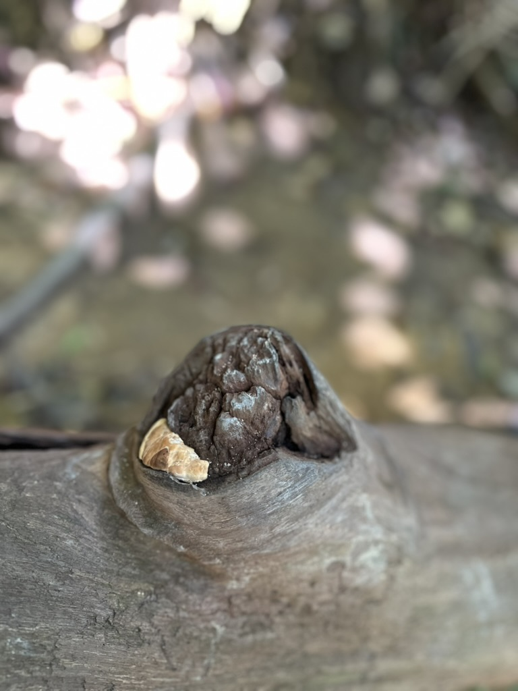

Rethinking the Relationship Between Human and Nature
written on 1 June 2025
Nature to most of us is like a place where we go to when we want to escape the hustle and bustle of the hectic city. We have all been tamed to survive, to cage ourselves among the skyscrapers and concrete.
Yet, what are we to nature?
Recently, I went back into the jungle for trekking, and it's safe to say that getting back into the jungle definitely has helped me regain the spirituality and the energy depleted by the repetitive routine of the city.

It never fails to amaze me how branches and leaves tend to grow like a canopy yet never overlapping each other. The phenomenon is called crown shyness according to Wikipedia.

People called it white-browed monkey.

Nature tends to heal itself.
In trekking I rediscover the joy of shedding all the unwanted weights and expectations, fully living in the moment. All the sensations are so pure and alive: the chirping of cicadas and birds, the swaying of leaves and branches with monkeys swinging across trees, the soothing scent of floras in the air, the touch of the breeze on my skin, they are so overwhelming yet uplifting.
It was supposed to be an entirely positive experience with no further realisations, but an unexpected encounter hit me hard. On my way downhill, a special tree caught my attention. The bottom of the tree trunk was half-decayed, leaving only a half trunk standing.

The tree trunk was half gone, leaving only a half trunk standing.
I couldn't help but pay attention to the tree. It was so tall that I couldn't fully grasp its height, but I supposed it was about 20 meters tall.
What intrigued me most was when I walked past the tree. I turned my head back and I saw a sign on the trunk.

The sign with a Chinese sentence translates to "Amitabha Buddha, please put down the butcher's knife and spare us; empathize with others, and repentance leads to salvation.".
I couldn't help but be stunned the moment I read it. One second I was so content with getting myself close to the nature, feeling proud of myself for being able to admire the beauty of nature; the next second I was questioning the relationship between human and nature.
Are we, as human, parasites to the earth? Is jungle trekking, in the name of adventure and showering ourselves in the nature, actually harming the environment? The thoughts of me stepping through the jungle, lustfully savouring all the sensations it has brought to me, which in fact could be the very reason why the jungles are getting destroyed in the first place. And this very much has saddened me in a way that I never expected.
Yet I think it was a blessing for me to be able to experience both sides of the coin. Perhaps I can figure out something more profound over time and act differently in the future, but for now I am going to keep journeying into the jungles while being more mindful of my actions.